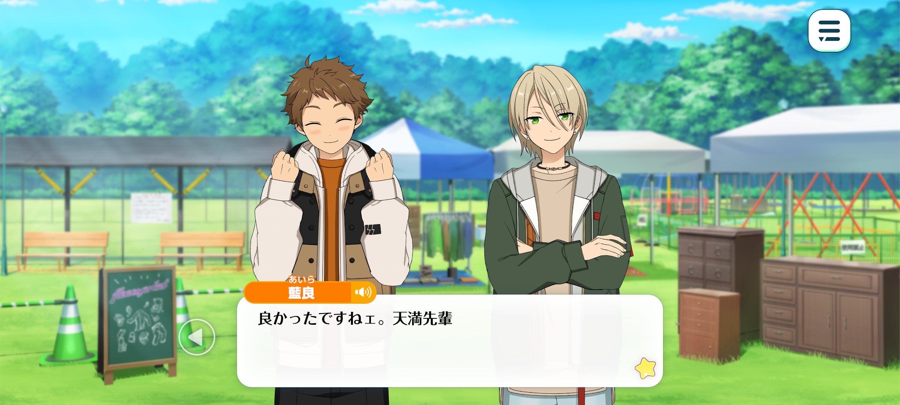
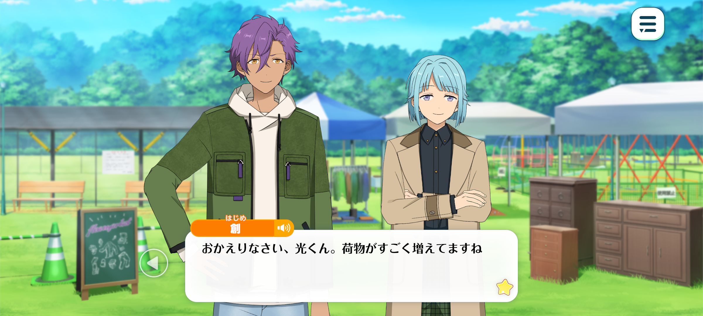
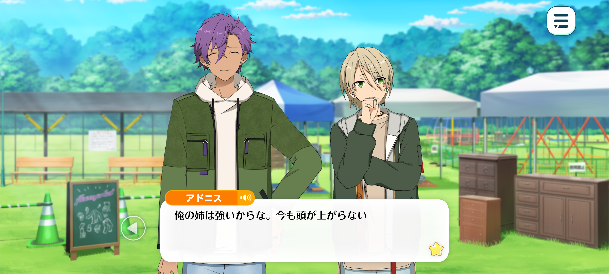

Scout! Dolly Night
Memories Of A Doll – Chapter 5


Time: An hour later

Mitsuru: Yippeee~! I got loads of amazing bargains~!
Second-hand clothes, accessories, and even this cup! I'm suuuper happy with everything I bought~! ☆
Aira: I'm glad to hear that, Tenma-senpai.
I'm absolutely exhausted from trying to keep up with you, but… I'm glad we had fun together.
Well, shall we head back now? We've left Otogari-senpai and Shino-senpai looking after the stall for quite a while, so we should probably give them a hand.
Mitsuru: Eh? Is that alright? You only came here to do a bit of shopping, Ai-chan. Are you sure you don't want to look around some more?
Aira: Ahaha. It's alright! I've been having fun, too. Since I'm here anyway, I'd be happy to help out!
Mitsuru: Okay! C'mon, let's head back~♪ Nyooom~! ☆
Aira: W-wait for me! Tenma-senpai~!

Mitsuru: Ai-cha~n! Hurry up, hurry up!
I think someone just bought my shoes! They must be about the same size as me. Maybe they do track and field, too!
Let's go give my shoes a proper send-off together~! ♪
Aira: Haa, haa…! It's so hard keeping up with Tenma-senpai! My whole body is gonna be aching tomorrow…!
Adonis: Ah, Tenma and Shiratori. You're back. Shino returned a little while ago, too.
Hajime: Welcome back, Mitsuru-kun. My, you've bought quite a lot, haven't you?
I'm glad you found so many lovely things. It must be tiring carrying them all around, so I'll put them behind the stall for you.
Mitsuru: Okay, thanks!
The shoes I put up for sale have found a new owner, and I found sooo many cool things, too! I'm really glad Adochan-senpai told me about the flea market! ♪
Hajime: Fufu. Is that so? My things have been selling quite well, too, so I'm glad I decided to bring them along.
I hope someone will take Otogari-senpai's doll home, too.
Adonis: Ah, yes. There's still plenty of time, so let's keep an eye on him.
If possible, I'd like him to find a new owner soon…
Hajime: Speaking of which, Otogari-senpai… You keep looking at that doll with such a worried expression. Is he a precious keepsake?
If you've had a change of heart and would rather keep him, we can put him aside for you. You don't have to sell him if you're having second thoughts, you know?
Aira: Exactly! If you're attached to the doll, there's nothing wrong with deciding not to sell him, right?
I've got things I regret getting rid of, too. Even keeping him tucked away in your wardrobe can be a way of showing your love for him.
Adonis: No. I do want to sell him. That was why I came here in the first place.
Anzu passed by a little while ago. She asked me about the doll, and it got me thinking that perhaps I should tell you all about him, too.
It's a little embarrassing, but… would you mind listening?
Hajime: …Of course.
Aira: Sure thing.
Adonis: To tell you the truth, this doll was a gift from my mother.
Mitsuru: Adochan-senpai's mum? Ehhh? Did ya ask her to get him for you?
Adonis: Mhm. When I was little, I used to watch my sisters playing with dolls, and I told them I wanted to play, too.
But my sisters thought it was strange for a boy to want to play with dolls.
They wouldn't let me play with theirs, and told me I should do more boyish things instead, like hunting and exercising.
However, my mother was the only one who took what younger me said seriously.
She didn't want my sisters to tease me for playing with dolls, so she went out of her way to find one that was made for a boy.
Aira: I see… So even Otogari-senpai has had experiences like that.
Honestly, I always thought you'd been strong ever since you were little.

Adonis: My sisters are the strong ones. Even now, I'm no match for them.
But the person I was as a child and the person I am now are different. I've grown up, and I no longer need this doll.
Thinking about it now, this brings me back to the idea of animism. If a spirit resides in this doll, too, then I feel terrible leaving him forgotten and covered in dust.
The least I can do now is find him a new owner.
I truly believe this flea market has given me another chance to do just that.
Aira: …It's obvious how much you care about this doll, Otogari-senpai!
Ah, sorry! Maybe that's a bit presumptuous of me…
I'm an otaku myself, so I've always treasured the idol goods I've collected over the years, even those of idols I used to be a fan of…
Whether I still own those things or not, and even if I sometimes forget just how much I loved them back then, the memories I made will never disappear.
So! I'm going to think of a way to make this doll stand out! I'll make a big, eye-catching advert, just like the ones you see at that convenience store nearby!
Mitsuru: Yep, yep! Adochan-senpai's done lots for me, so I wanna help find this doll a new owner, too!
If Adochan-senpai hadn't told me about the flea market, all my old clothes would probably still be sitting in boxes! This is my way of saying thanks~♪
I'll go around and tell everyone to come and have a look!
Adonis: Are you sure? You don't have to go to all this trouble for me, Tenma, Shiratori… Am I not just dragging everyone into my own reminiscing?
Hajime: Not at all. Please don't worry, Otogari-senpai.
Aoba-senpai looked after me when we were both on the library committee. And now that Otogari-senpai is relying on me, I want to help you see this through to the end.
Adonis: …Thank you. For everything you've done to help me.
I won't give up, either. Let's find him a new home together.
I want to do my best to live up to the kindness you've all shown me.